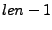
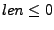

Next: Function: create2dCol Up: The Array API Previous: Function: createRow Contents Index
/* C */
struct sidl_double__array*
sidl_double__array_create1d(int32_t len);
// C++
static sidl::array<double>
sidl::array<double>::create1d(int32_t len);
C FORTRAN 77
subroutine sidl_double__array_create1d_f(len, result)
integer*4 len
integer*8 result
! FORTRAN 90
subroutine create1d(len, result)
integer (selected_int_kind(9)), intent(in) :: len
type(sidl_double_1d), intent(out) :: result
// Java
public Array1(int s0, boolean isRow);
This method creates a dense, one-dimensional vector of ints with a lower index of 0 and an upper index of . This is defined primarily as a convenience for C and C++ programmers; Fortran programmers should note that this subroutine creates arrays whose lower index is 0 not like standard Fortran arrays whose lower index is 1. If , this routine returns NULL.